- 第一章 课程背景介绍
- 第二章 静态资源优化
- 3 图片优化: 如何为不同格式的图片选择合适的应用场景
- 4 图片优化: 怎样让图片加载得更快?
- 5 图片优化: 在服务器端进行图片自动优化的原理是什么?
- 6 html: 怎么精简优化html的代码结构?
- 7 css: css的优化应该遵循哪些原则?
- 8 javascript: 如何提升js的执行效率?
- 9 javascript: 如何对js的缓存进行优化?
- 10 javascript: 如何选择合适的模块化加载方案?
- 11 怎样才能减少浏览器的回流和重绘?
- 12 dom编程优化: 怎样控制dom大小并简化dom操作?
- 13 静态文件: 有哪些常用的压缩工具?
- 14 静态文件: 怎样打包才更合理?
- 15 静态文件: 版本号更新, 你应该遵循哪些策略?
- 16 构建工具: 常用的前端构建工具有哪些? 如何选型?
- 17 打包优化: 提升webpack打包效率的6个小技巧
- 第三章 页面渲染架构设计与性能优化
第一章 课程背景介绍
1 课程介绍
1-1 什么是前端性能优化?
通常来讲，我们说的前端性能优化是指从用户开始访问我们的网站到整个页面完整地展现出来的过程中，通过各种优化策略和优化方法，让页面加载得更快，让用户的操作相应更及时，给用户更好的使用体验。
1-2 学习前端性能优化的难点在哪里?
2 内容综述
2-1 六大部分
第二章 静态资源优化
3 图片优化: 如何为不同格式的图片选择合适的应用场景
3-1 图片格式和应用场景介绍
JPEG（Joint Photographic Experts Group）
PNG（Portable Network Graphics）
GIF（Graphics Interchange Format）
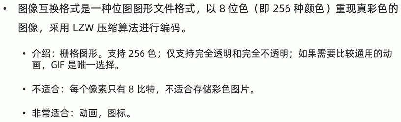Webp

4 图片优化: 怎样让图片加载得更快?
4-1 用工具进行图片压缩
4-1-1压缩png
- node-pngquant-native 跨平台，压缩比高，压缩png24非常好
- 说明文档https://www.npmjs.com/package/node-pngquant-native
- 安装方法：
$ npm install node-pngquant-native - 新建index.js如下，运行
$ node index.js执行压缩，基本上能从300k压缩到50k：1
2
3
4
5
6
7
8
9
10
11
12// var pngquant = require('node-pngquant-native')
var pngquant = require('jdf-png-native')
var fs = require('fs')
fs.readFile('./in.png', (err, buffer) => {
// if(err) {
// throw err
// }
var resBuffer = pngquant.option({}).compress(buffer)
fs.writeFile('./out.png', resBuffer, {
flags: 'wb'
}, function(err) {})
})
4-1-2 压缩jpg
- jpegtran 跨平台，有Linux、Mac、Windows的解决方案
- 官网
- 安装方法：
$ npm install -g jpegtran - 使用方法：
$ jpegtran -copy none -optimize -outfile out.jpg in.jpg
4-1-3 压缩gif
- Gifsicle：通过改变每帧比例，减小gif文件大小，同时可以使用透明来达到更小的文件大小，目前公认的解决方案。
- 安装：官网
- 使用方式：
优化级别设置为不小于2，1的话基本不压缩$ gifsicle --optimize=3 -o out.gif in.gif
将透明部分截去$ gifsicle --optimize=3 --crop-transparency -o out.gif in.gif
4-2 图片尺寸随网络环境变化
不同网络环境（Wifi/4G/3G）下，加载不同尺寸和像素的图片，通过在图片URL后缀加不同参数改变。
4-3 响应式图片
有以下三种方式实现：
- JavaScript绑定事件检测窗口大小，以设置图片大小
- CSS媒体查询
1
2
3
4
5@media screen and (max-width: 640px) {
my_image {
width: 640px;
}
} - h5中img标签属性srcsetx描述符：表示图像的设备像素比
1
2<img srcset="img-320w.jpg, img-640w.jpg 2x, img-960w.jpg 3x"
src="img-960w.jpg" alt="img">
4-4 逐步加载图像
共三种方式，来提高用户体验：
4-4-1 使用统一占位符
比如在每个图片后加个公司logo，使用户在图片加载前可以看到这个占位符的图像
4-4-2 使用lqip (low quality image placeholders, 低质量图像占位符)
使图片加载前让用户看到这个低质量图片的占位
安装：
$ npm install lqipindex.js中编码如下：
1
2
3
4
5
6
7
8
9
10const lqip = require('lqip')
const file = './in.png'
// image
lqip.base64(file).then(res => {
console.log(res)
})
// color
lqip.palette(file).then(res => {
console.log(res)
})打印结果为：
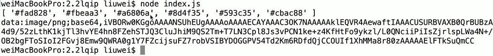这样使用：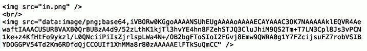效果图对比如下：
4-4-3 使用sqip (svg quality image placeholders, 基于svg的图像占位符)
- 安装：
$ npm install sqip - 源码：https://github.com/axe312ger/sqip
- index.js编码如下：打印结果为：
1
2
3
4
5
6const sqip = require('sqip')
const result = sqip({
filename: './in.png',
numberOfPrimitives: 10
})
console.log(result.final_svg)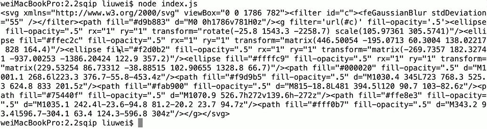这样使用：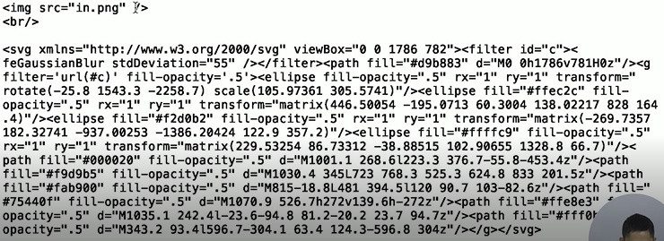效果图对比如下：比LQIP的效果能稍微好一点；而且SVG可以设置不同的大小。
4-5 真的需要图片吗?
- 可以使用Web Font代替图片，比如小图标或切出来的业务图片，Web Font可以在不同的分辨率和不同的大小下进行特殊设置
- 可以使用Data URI代替图片，即base64图片，这样我们可以把base64代码用css文件的方式缓存到本地，就不用再请求图片内容了，直接走缓存即可
- 也可以采用Image Spriting（雪碧图）把多个小图片合成一张大图，这样用户在加载网页时，小图片的请求就被压成一个
5 图片优化: 在服务器端进行图片自动优化的原理是什么?
5-1 图片服务器自动优化解密
名词解释：
图片服务器自动化优化是可以在图片URL链接上增加不同特殊参数，服务器自动化生成不同格式、大小、质量的图片。处理方式：
- 图片裁剪：按长边、短边、填充、拉伸等缩放
- 图片格式转换：支持JPG、GIF、PNG、WebP等，支持不同的图片压缩率
- 图片处理：添加图片水印、高斯模糊、重心处理、裁剪边框等
- AI能力：鉴黄以及只能抠图、智能排版、智能配色、智能合成等AI功能
请看下图：
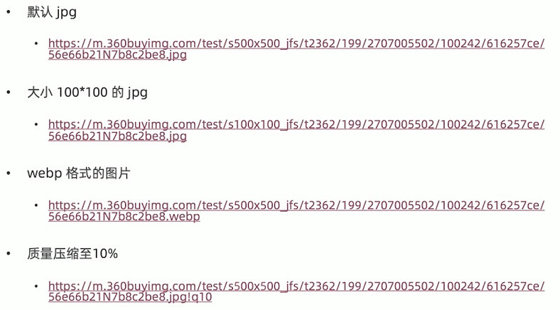这四种图片格式主要通过s参数展示，最后质量压缩比如我们可以添加!q10
6 html: 怎么精简优化html的代码结构?
6-1 精简html代码
- 减少HTML的嵌套
- 减少DOM节点数
- 减少无语义代码（比如：
<div class="clear"></div>消除浮动） - 删除http或者https，如果URL的协议头和当前页面的协议头一致的，或者此URL在多个协议头都是可用的，则可以考虑删除协议头
- 删除多余的空格、换行符、缩进和不必要的注释，当然可以用压缩工具来处理
- 省略冗余标签和属性
- 使用相对路径的URL
6-2 文件放在合适的位置
- CSS样式文件链接尽量放在页面头部
CSS加载不会阻塞DOM Tree解析，但是会阻塞DOM Tree渲染，也会阻塞后面JS执行。任何body元素之前，可以确保在文档部分中解析了所有CSS样式（内联和外联），从而减少了浏览器必须重排文档的次数。如果放在页面底部，就要等待最后一个CSS文件下载完成，此时会出现“白屏”，影响用户体验。 - JS引用放在HTML底部
防止JS的加载、解析、执行对阻塞页面后续元素的正常渲染
6-3 增强用户体验
- 设置favicon.ico
网站如果不设置favicon.icon，控制台会报错；
另外页面加载过程中地址栏左上角也没有图标loading过程；
同时也不利于记忆网站品牌，建议统一添加。 - 增加首屏必要的CSS和JS
页面如果需要等待所依赖的JS和CSS加载完成才显示，则在渲染过程中页面会一直显示空白，影响用户体验，建议增加首屏必要的CSS和JS，比如页面框架背景图片或者loading图标，内联在HTML页面中。这样做，首屏能快速显示出来，相对减少用户对页面加载等待过程。
比如新浪微博M站页面框架：
7 css: css的优化应该遵循哪些原则?
7-1 提升css渲染性能
- 谨慎使用expensive属性
如nth-child伪类，position:fixed定位 - 尽量减少样式层级数，减少浏览器对CSS的查询
如div ul li span i {color:blue;} - 尽量避免使用占用过多CPU和内存的属性
如text-indent:-99999px - 尽量避免使用耗电量大的属性
如CSS3 3D transforms、CSS3 transitions、Opacity
7-2 合适使用css选择器
- 尽量避免使用CSS表达式
background-color: expression(new Date().getHours()%2 ? "#fff" : "#000") - 尽量避免使用通配选择器
body > a {font-weight:bold;} - 尽量避免类正则的属性选择器
*=, |=, ^=, $=
7-3 提升css文件加载性能
- 使用外链的CSS
因为可以把这个CSS放到CDN上，用户每次使用都会有缓存的，这样就减小整个页面体积的大小 - 尽量避免使用@import
因为只有所有import文件都加载完成才能往下走，会阻塞CSS文件甚至JS文件的加载
7-4 精简css代码
- 使用缩写语句
如margin-top:10px;margin-bottom:10px;尽量写成margin:10px 0; - 删除不必要的零
比如0.2em直接写成.2em即可 - 删除不必要的单位，如px
比如0px直接写成0即可 - 删除过多的分号
- 删除空格和注释
以提升代码的可读性
总之，要尽量减少样式表的大小。
7-5 合理使用web fonts
- 将字体部署在CDN上
可以加快加载字体文件的速度 - 将字体以base64形式保存在CSS中并通过localStorage进行缓存
- 假如使用国外的字体库，如Google字体库，因为网络异常等某些不可抗原因不能正常加载，应该使用国内托管服务
7-6 css动画优化
- 尽量避免同时动画
- 延迟动画初始化
可以保证其他CSS样式正常渲染 - 结合SVG
8 javascript: 如何提升js的执行效率?
8-1 js优化的总体原则
- 当需要时才优化
比如项目大的改版或代码无法维护时考虑整体优化 - 考虑可维护性
结合团队整体水平来优化
8-2 提升js文件的加载性能
- 加载元素的顺序：CSS文件放在里，JS文件放在底部
8-3 js变量和函数的优化
- 尽量使用id选择器
这样在查询方面速度非常快 - 尽量避免使用eval
因为eval()方法非常好性能 - JS函数尽可能保持简洁
- 使用事件节流函数
如100ms后才响应scroll和resize事件一次，就能大大提升函数的加载效率 - 使用事件委托
比如ul > li元素，可以把事件直接绑定到父元素ul上，这样在事件响应时，就不会查询到每个li上，直接到它父级即可，这样能提升查询效率和事件的响应速度
8-4 js动画优化
- 避免添加大量JS动画
- 尽量使用CSS3动画
因为CSS可以直接访问浏览器的GPU，比JS的性能好 - 尽量使用Canvas动画
- 合理使用requestAnimationFrame动画代替setTimeout、setInterval
因为requestAnimationFrame可以在正确的时间进行渲染，setTimeout(callback)和setInterval(callback)无法保证callback回调函数的执行时机 - 动画和事件尽量分离，不要耦合在一起
8-5 合理使用缓存
- 合理缓存DOM对象
比如存到一个变量里 - 缓存列表长度
也是把多个相同的元素如li的长度取出来放到一个变量里 - 使用可缓存的Ajax
把Ajax的catch打开，提升调用接口的时间
9 javascript: 如何对js的缓存进行优化?
9-1 cookie
- Cookie通常由浏览器存储，然后将Cookie与每个后续请求一起发送到同一服务器。收到HTTP请求时，服务器可以发送带有Cookie的header头。可以给Cookie设置有效时间。
- 应用于：
- 会话管理：登录名，购物车商品（如数量、id等），游戏得分或服务器应该要记录的其他任何内容
- 个性化：用户首选项，主题或其他设置（比如首页排版布局、其他个性化专栏）
- 跟踪：记录和分析用户行为，比如埋点（比如在每个页面用Cookie埋一个值即标识，每访问一个页面，这个标识都会带到下个页面，就可以加以利用了，如给用户定向推送广告）
9-2 session storage
- 它是创建一个本地存储的键/值对
- 应用于：页面之间传值
- 有效期：用户关闭浏览器，值就会被清空掉
9-3 indexed db
- 索引数据库
- 应用于：
- 客户端存储大量结构化数据
- 在没有网络连接的情况下也可以使用（比如在线文档如Google Doc、石墨文档）
- 将冗余、很小修改、但经常访问的数据存储下来，以避免随时从服务器获取数据，减少请求数 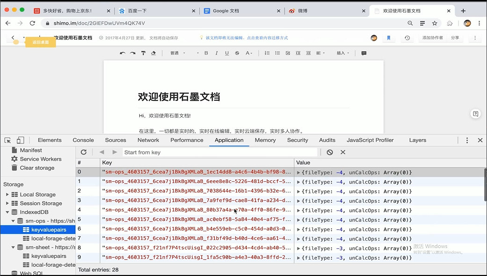
9-4 local storage
- 本地存储
- 有效期：浏览器关闭后存储其中的数据也还存在，除非手动或用程序清空
- 应用于：
- 缓存静态文件内容JS/CSS（比如百度M站首页） 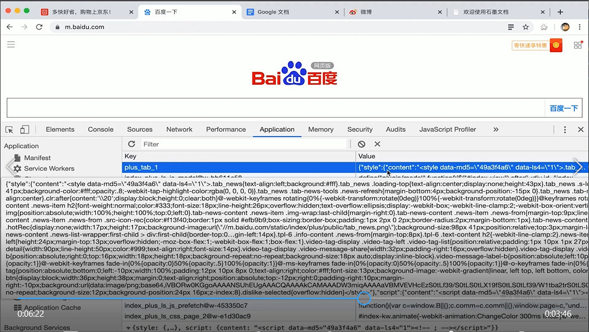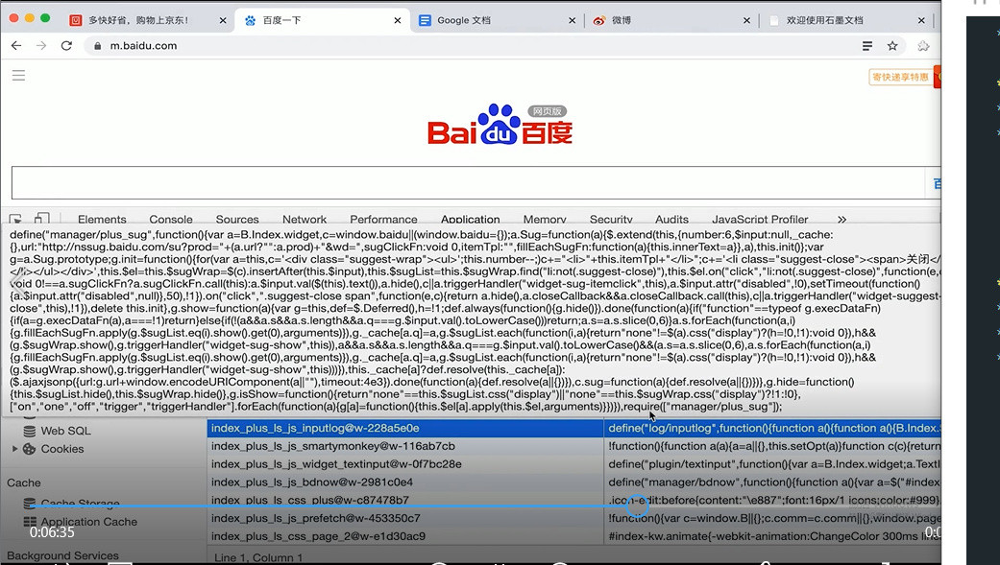用户访问这个页面后，我们会把第一次访问时的JS/CSS文件放在localStorage，存储到本地，如果没有更新的话，用户下次访问时就不要再请求JS/CSS文件了，只要从localStorage中取，并塞进对应的style标签。
怎么更新呢？
每个文件后都有个@值，可以在每次上线更新完后给每个key值加个特殊参数，比如以文件的内容做md5值来进行添加，这样本地就存储了本次变更的JS/CSS文件信息，再把这个值放到页面上，就可以正常加载了。 - 缓存不常变更的API接口数据
比如一些固化的数据或者每天或每半天要更新的数据，都是可以存储到localStorage中去的，更新的话和上面类似，可以把接口数据的内容做个md5值，有变更后，它内容的md5也会有变更，那么我们就会重新请求变更后的数据，同时会存到localStorage中去，这样页面就可以加载得更快。 - 储存地理位置信息
- 浏览在页面的具体位置
比如一些阅读类的网站，可以存储当前用户阅读的屏数，下次再访问时就可以直接定位到上次浏览的终点位置。
- 缓存静态文件内容JS/CSS（比如百度M站首页） 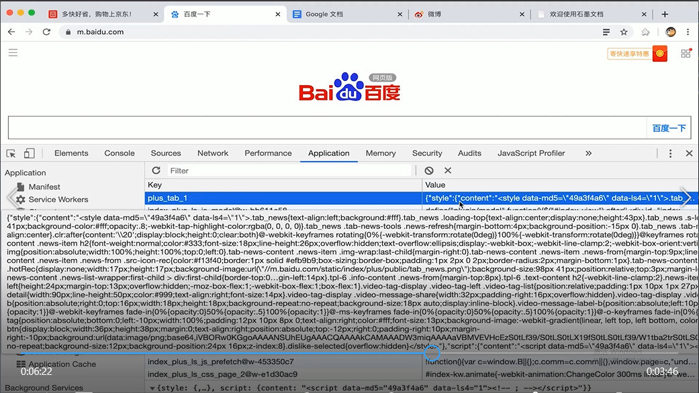
10 javascript: 如何选择合适的模块化加载方案?
10-1 js模块化加载方案和选型
10-1-1 commonjs
- 旨在Web浏览器之外为JavaScript建立模块生态系统，它都是同步加载的
1
2
3
4
5
6
7// CommonJS
// 引入依赖
var store = require('store')
// exports
exports = function() {
return store.get('customers')
} - Node.js模块化方案受到CommonJS的影响
1
2
3
4
5
6
7
8// NodeJS module
// 引入依赖
var store = require('store')
function customerStore() {
return store.get('customers')
}
// exports
module.exports = customerStore它与CommonJS的差异是，只能对外输出一个对象
10-1-2 amd (asynchronous module definition)
- 它是异步模块定义规范，主要应用在浏览器上
- 比如RequireJS模块化加载器，就是基于AMD API实现的需要把它基础依赖的JS文件引入到项目中，这样才能异步调用其他模块JS的信息
1
<script data-main="scripts/main" src="scripts/require.js"></script>
10-1-3 cmd (common module definition)
- 它是通用模块定义规范
- 比如SeaJS模块化加载器，遵循CMD API编写
1
2
3
4
5
6
7
8// 方式一
define(function(require, exports, module) {
// 模块代码
})
// 方式二
define('module', ['module1', 'module2'], function(require, exports, module) {
// 模块代码
})
10-1-4 es6 import
语法如下：
1 | // square.js |
11 怎样才能减少浏览器的回流和重绘?
11-1 css方面
- 避免过多样式嵌套
- 避免使用CSS表达式
因为CSS表达式每次都会在CSS重绘的过程中执行 - 使用绝对定位，可以让动画元素脱离文档流
- 避免使用table布局
因为table布局会引起浏览器的多次重绘 - 尽量不使用float布局
建议用flex布局 - 图片最好设置好width和height
否则等图片完全加载后，整个页面就会重新设置它的width和height值，而用户看到的就是一片空白区域逐渐增大的画面，体验不好。所以最好在html设置好 - 尽量简化浏览器不必要的任务，减少页面重新布局
- 使用Viewport设置屏幕缩放级别
这样浏览器在渲染过程中就可以直接缩放了 - 避免频繁设置样式，最好把新的style属性设置完成后，进行一次性更改
- 避免使用引起回流/重绘的属性，最好把相应的变量缓存起来
11-2 js方面
- 最小化回流和重排
为了减少回流发生的次数，避免频繁操作DOM，可以合并多次对DOM修改，然后一次性批量处理。 - 控制绘制过程和绘制区域
绘制过程开销比较大的属性设置应该尽量避免减少使用
减少绘制区域范围 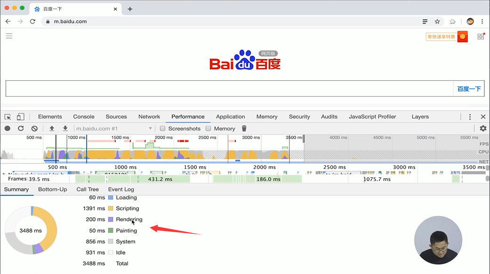
12 dom编程优化: 怎样控制dom大小并简化dom操作?
12-1 控制dom的大小
- 众所周知，页面交互卡顿和流畅度很大一部分原因就是页面有大量DOM元素。另外元素绑定事件，事件冒泡和事件捕获的执行也会相对耗时。
- 通常控制DOM大小的技巧包括：
- 合理的业务逻辑
把业务逻辑进行合理得拆分，每实现一个业务逻辑尽量减少DOM树的数量 - 延迟加载即将呈现的内容（懒加载）
- 合理的业务逻辑
12-2 简化dom的操作
- 对DOM节点的操作统一处理后，再统一插入到DOM Tree中。
- 可以使用fragment，尽量不在页面DOM Tree里直接操作。
把DOM节点的样式、内容统一设置好，最后再放到页面中。 - 现在流行的框架Angular、React、Vue都在使用虚拟DOM技术，通过diff算法简化和减少DOM操作。
13 静态文件: 有哪些常用的压缩工具?
13-1 html压缩工具
html-minifier [https://www.npmjs.com/package/html-minifier](https://www.npmjs.com/package/html-minifier)
它可以删除一些html的换行、注释等其他不必要的字符，压缩后，html源代码由很多行变成一行，体积变小了。
13-2 css压缩工具
clean-css [https://www.npmjs.com/package/clean-css](https://www.npmjs.com/package/clean-css)
13-3 js压缩工具
- uglify-js https://www.npmjs.com/package/uglify-js
- 使用方法：uglifyjs in.js -o out.js
14 静态文件: 怎样打包才更合理?
14-1 静态文件打包方案
- 公共组件拆分
把公用的js文件抽离成组件，其他页面直接调用它即可，这样当用户访问时，js文件的大小比较少，而且公用的这部分在其他页面也不需要再加载了，直接走CDN的缓存即可。 - 压缩：JS/CSS/图片
- 合并：JS/CSS文件合并，CSS Sprite图
- Combo：JS/CSS文件 Combo http://cdn.com/??a.js,b.js 内容（建议√）
它是服务端处理的方式，比如在url后加个?a.js,b.js，这样用户在请求这个url时，服务端会把a.js和b.js自动合成，所以在请求页面时，无论有多个js文件，只发一次请求就可以了，大大减少了整个页面的请求数，并且是在服务器端重载处理，减少了前端开发成本。
15 静态文件: 版本号更新, 你应该遵循哪些策略?
15-1 缓存更新
CDN或ng后台刷新文件路径，这样后台通过shell脚本，就会更新文件header头，等这次缓存时间过期后，用户就会请求到最新的文件内容。
15-2 静态文件版本号更新策略
但是上面那样存在一个问题：比如项目已经上线或者发现一个bug，但用户看到的还是旧文件，所以需要下面的几种方式来解决：
- 文件name.v1-v100.js，即在文件name后加个版本号
- 为了区分每次的功能不一样，我们可以在大功能迭代上每次增加一个大版本，比如由v1到v2;
- 而小功能迭代新增加0.0.1或者0.1.0，比如从v1.0.0至v1.0.1，更新完后，把新的url路径更新到线上，这样用户打开页面就能立马取到最新的文件内容。
- 隔一段时间后，线上会有n多个版本的文件，怎么处理呢？
可以在年末时，ng统一配置所有版本302至最新版。
- 时间戳.文件name.js
- 以每次上线时间点做差异
- 我们在实际研发中，为了省事，可能也会把一个项目的目录定义成这样进行区分
- 文件hash.文件name.js（这是最好的方式）
- 以文件内容hash值做key，放到url后。当内容变更，这个hash值也会改变，而内容不变，hash值也不会变，这样就保证了用户只对更新的文件更新缓存
- 每次上线，文件路径不一致
16 构建工具: 常用的前端构建工具有哪些? 如何选型?
16-1 grunt
- 出现得最早，一个项目需要定制多个小任务和引用多个插件（质量参差不齐）
- 它给前端以通过JavaScript写shell脚本的方式进行处理开发过程中的一些代码压缩、合并等事情
16-2 gulp
- 通过流（stream）来简化多个任务间的配置和输出
- 配置代码相对较少
16-3 webpack
- 采用预编译，我们需要编译的文件在整个任务的过程中已经处理好了
- 中间文件（如缓存文件）都放在内存里处理，比另外放在一个缓存目录有很大的优势
- 支持多种模块化，比如CommonJS、AMD、ES6 Import
- 配置相对简单
- 综合对比，它是最流行的。
16-4 百度的fis
16-5 京东的jdf
以此为例，详细介绍构建工具具体怎么研发，它的内核是什么样的，以及它具体怎么来使用：
待续……
17 打包优化: 提升webpack打包效率的6个小技巧
17-1 定位体积大的模块
定位后，把这个大模块进行一一拆解或删除
17-2 删除没有使用的依赖
之前在使用的依赖，后来经过迭代后依赖不存在了，就可以把它删除掉
17-3 生产模式进行公共依赖包抽离
比如我们依赖的vue或react框架，可以把这些框架的文件通过打包的形式拿出来，放到页面上。这有什么好处呢？
比如我们有n个业务线，同时都依赖于vue2.0的某个包，我们抽离完放在页面上，其他用户访问到A业务后再访问其他业务，这样vue的包文件不会重新加载，只需要加载业务文件即可。这样就能加速整个页面的访问，并且能够实现各个业务线的公共文件的抽离。
17-4 在开发模式进行dll和dllreference方式优化
我们在开发中可能依赖一些react或react router或者其他的公共的react组件，在开发中这些组件甚至react本身都要编译到内存中，我们采用这种方式，就不用每次在有代码变更时再次对react或它的框架进行编译了。这种方式能提升开发时间和效率。
接下来看下在实际生产和开发环境中，webpack怎么配置才能进行优化？
webpack.dev.dll.js：
1
2
3
4
5
6
7
8
9
10
11
12
13
14
15
16
17
18
19
20
21
22
23
24
25
26
27
28
29
30
31
32
33
34
35
36
37
38
39
40
41
42
43
44
45import webpack from 'webpack'
const appRoot = path.join(__dirname, '../')
export default {
mode: 'development',
entry: {
vendor: [
'react',
'react-dom',
'react-redux',
'react-router-dom',
'react-transition-group',
'redux',
'redux-logger',
'redux-saga',
'history',
'immutable'
]
},
output: {
path: path.join(appRoot, 'public', 'dll'),
filename: '[name].dll.js',
/**
* output.library
* 将会定义为 window.${output.library}
* 在这次的例子中，将会定义为`window.vendorLibrary`
*/
library: '[name]Library'
},
plugins: [
new webpack.DllPlugin({
/**
* path
* 定义manifest文件生成的位置
* [name]的部分由entry的名字替换
*/
path: path.join(appRoot, 'public', 'dll', '[name]-manifest.json'),
/**
* name
* dll bundle 输出到那个全局变量上
* 和 output.library 一样即可
*/
name: '[name]Library'
})
]
}在入口entry里面，像react、react-dom、redux、history、immutable这样的组件在开发阶段最终会生成一个dll.js文件（output.filename），以及中间会产生一个配置的文件path: path.join(appRoot, 'public', 'dll', '[name]-manifest.json')（在plugins中），在开发阶段webpack就不会每次都重新编译这些依赖的库文件了，只要在manifest里面或者上面的入口里面写完后，就可以直接在内存里读取它的内容，同时它会把打成的包文件挂到window下面的vendorLibrary这个变量上面，页面就可以直接使用了。
webpack.dev.js：
1
2
3
4
5
6
7
8
9
10
11
12
13
14
15
16
17
18
19
20
21
22
23
24
25
26
27
28
29
30
31
32
33
34
35
36
37
38
39
40
41
42
43
44
45
46
47
48
49
50
51
52
53
54
55
56
57
58
59
60
61
62
63
64
65
66
67
68
69
70
71
72
73
74
75
76
77
78
79
80
81
82
83
84
85
86
87
88
89
90
91
92
93
94
95
96
97
98
99
100
101
102
103
104
105
106
107
108
109
110
111
112
113
114
115
116
117
118
119
120
121
122
123
124
125
126
127
128
129
130
131
132
133
134
135
136
137
138
139
140
141
142
143
144
145
146
147
148
149
150
151
152
153
154
155
156
157
158
159
160
161
162
163
164
165
166
167
168
169
170
171
172
173
174
175
176
177
178
179
180
181
182
183
184
185
186
187
188
189
190
191
192
193
194
195
196
197
198
199
200
201
202const path = require('path')
const fs = require('fs')
const webpack = require('webpack')
const cssnano = require('cssnano') // 优化css，对于长格式优化成短格式等
const autoprefixer = require('autoprefixer')
// 修复flexbox已知的bug
const flexbugs = require('postcss-flexbugs-fixes')
// 根目录上下文
const { URL_CONTEXT } = require('../common/constants')
const hotMiddlewareScript = 'webpack-hot-middleware/client?path=/__webpack_hmr&timeout=20000&reload=true'
const appRoot = path.resolve(__dirname, '../')
const appPath = path.resolve(appRoot, 'public')
// webpack config
const webpackConfig = {
/**
* 生产下默认设置以下插件，webpack 4中，一些插件放在optimization中设置
* https://webpack.js.org/concepts/mode
* - plugins: [
* - new webpack.NamedModulesPlugin(),
* - new webpack.DefinePlugin({ "process.env.NODE_ENV": JSON.stringify("development") })
* - ]
*/
mode: 'development',
cache: true, // 开启缓存，增量编译
bail: false, // 设为true时如果发生错误，则不继续尝试
devtool: 'eval-source-map', // 生成source map文件
/**
* Specify what bundle information gets displayed
* https://webpack.js.org/configuration/stats/
*/
stats: {
cached: true, // 显示缓存信息
cachedAssets: true, // 显示缓存的资源（将其设置为`false`则仅显示输出的文件）
chunks: true, // 显示chunk信息（设置为`false`仅显示较少的输出）
chunkModules: true, // 将构建模块信息添加到chunk信息
colors: true,
hash: true, // 显示编译后的hash值
modules: true, // 显示构建模块信息
reasons: true, // 显示被导入的模块信息
timings: true, // 显示构建时间信息
version: true // 显示webpack版本信息
},
/**
* https://webpack.js.org/configuration/target/#target
* webpack能够为多种环境构建编译，默认是'web'，可省略
*/
target: 'web',
resolve: {
// 自动扩展文件后缀名
extensions: ['.js', '.scss', '.css', '.png', '.jpg', '.gif'],
// 模块别名定义，方便直接引用别名
alias: {},
// 参与编译的文件
modules: ['client', 'node_modules']
},
/**
* 入口文件，让webpack用哪个文件作为项目的入口
* 如果用到了新的es6 api，需要引入babel-polyfill，比如String.prototype中的方法includes
* 所以根据实际需要是否引入babel-polyfill
*/
entry: {
index: ['./client/pages/index.js', hotMiddlewareScript]
},
// 出口，让webpack把处理完成的文件放在那里
output: {},
// module处理
module: {
/**
* Make missing exports an error instead of warning
* 缺少exports时报错，而不是警告
*/
strictExportPresence: true,
rules: [
// https://github.com/MoOx/eslint-loader
{
enforce: 'pre',
test: /\.js$/,
exclude: /node_modules/,
use: {
loader: 'eslint-loader',
options: {
configFile: '.eslintrc.js',
// 验证失败，终止
emitError: true
}
}
},
{
test: /\.js$/,
exclude: /node_modules/,
use: {
loader: 'babel-loader',
options: {
cacheDirectory: true,
babelrc: false,
presets: [],
plugins: []
}
}
},
{
test: /\.css/,
use: [
'style-loader',
{
loader: 'css-loader',
options: {
sourceMap: true,
localIdentName: '[name]_[local]_[hash:base64:5]'
}
},
{
loader: 'postcss-loader',
options: {
sourceMap: true,
plugins: [
cssnano({
autoprefixer: false
}),
flexbugs(),
autoprefixer({
flexbox: 'no-2009'
})
]
}
}
],
// publicPath: '/public/dist/' 这里如设置会覆盖output中的publicPath
},
/**
* Rules for images
* https://webpack.js.org/configuration/module/#rule-oneof
*/
{
test: /\.(bmp|gif|jpe?g|png|svg)$/,
oneOf: [
// 在css中的图片处理
{
issuer: /\.(css|less|scss)$/, // issuer表示在这些文件中处理
oneOf: [
// svg 单独使用svg-url-loaderInline处理，编码默认为utf-8
{
test: /\.svg$/,
loader: 'svg-url-loader',
exclude: path.resolve(
appRoot,
'./client/scss/common/_iconfont.scss'
), // 除去字体文件
options: {
name: '[path][name].[ext]?[hash:8]',
limit: 4096 // 4kb
}
},
/**
* 其他图片使用Base64
* https://github.com/webpack/url-loader
*/
{
loader: 'url-loader',
options: {
name: '[path][name].[ext]?[hash:8]',
limit: 4096 // 4kb
}
}
]
},
// 在其他地方引入的图片文件使用file-loader即可
{
loader: 'file-loader',
options: {
name: '[path][name].[ext]?[hash:8]'
}
}
]
}
]
},
// https://webpack.js.org/configuration/mode/#mode-development
plugins: [
new webpack.HotModuleReplacementPlugin() // 热部署替换模块
]
}
// 判断dll文件是否已生成
let dllExist = false
try {
fs.statSync(path.resolve(appPath, 'dll', 'webdor.dll.js'))
dllExist = true
} catch(e) {
dllExist = false
}
if(dllExist) {
webpackConfig.plugins.push(
new webpack.DllReferencePlugin({
context: appPath,
/**
* 在这里引入manifest文件
*/
manifest: require('../public/dll/vendor-manifest.json')
})
)
}
module.exports = webpackConfig可以把入口文件写在了最上面，在module里对它的eslint进行检查，当然也包括像babel对es6语法的编译，以及css-loader的相关配置，还会有postcss的编译的处理，还可以对字体文件的大小进行处理（limit:4096），也可以对base64编码的图片进行体积的控制。
在dev.dll.js文件生成完后，也要在dev开发模式的阶段进行一些引入，把刚才生成的vendor-manifest文件进行引入，这样我们那些包文件就不会进行编译了。
第三章 页面渲染架构设计与性能优化
18 浏览器渲染: 你是否清楚浏览器的渲染过程?
- step1 浏览器解析HTML，生成DOM Tree（Parse HTML）
- step2 浏览器解析CSS，生成CSSOM（CSS Object Model）Tree
- step3 JavaScript会通过DOM API和CSSOM API来操作DOM Tree和CSS Rule Tree，浏览器将DOM Tree和CSSOM Tree合成渲染树（Render Tree）
- step4 布局（Layout）：根据生成的Render Tree，进行回流，以计算每个节点的几何信息（位置、大小、字体样式等）
- step5 绘制（Painting）：根据渲染树和回流得到的几何信息，得到每个节点的绝对像素
- step6 展示（Display）：将像素发送给图形处理器（GPU），展示在页面上
19 页面渲染: 主流的页面渲染技术架构和方案有哪些?
19-1 服务端渲染
即在服务器渲染，然后在客户端进行展示，比如：
- 后端同步渲染，指的是JSP、PHP等后端语言渲染，也可以用Node.js的Node Server进行渲染
- 同构直出
- BigPipe
19-2 客户端渲染
- JavaScript渲染：静态化、前后端分离、单页面应用，即我们的NSPA
- Web App：它与JS不一样的地方是，它是单页面的，比如Angular、React、Vue等三大框架渲染的页面，另外还有PWA这种新技术
- 原生App：IOS、Android
- Hybrid App（混合式开发app）：PhoneGap、AppCan等框架，当然我们的大型app里也会有自己的hybrid设置
- 跨平台开发：React Native、Flutter、小程序等，采用这些语言用桥接的方式获取原生渲染的方式
20 后端同步渲染: jsp是如何同步渲染出页面的?
20-1 同步渲染步骤 (以jsp为例)
- step1 JSP Servlet映射以.jsp结尾的URL，当.jsp文件请求时，servlet容器知道要调用哪个Servlet
- step2 Servlet容器检查Servlet是否已被编译
- step3 如果未在步骤2中进行编译，则Servlet容器会将JSP转换为Servlet代码，并进行编译
- step4 Servlet容器将JSP请求转发到编译JSP Servlet类
- step5 JSP Servlet类返回并发送给客户端浏览器HTML，浏览器进行同步渲染
- 特别提出一点：我们整个包括取得后端业务的逻辑、数据库的信息和业务的处理，都是在JSP Servlet里处理完了，这时候给用户的才是正常看到的内容。
20-2 技术优点
快速实现业务开发并上线，因为：
- 市场上JSP和PHP技术人员较多
- JSP和PHP发展了这么多年了，他的整个技术栈和编译的工具都是比较现成的，整个技术框架也是比较现成的，只要找到这样的人，拿到现成的技术栈，就能快速实现我们的业务
20-3 技术不足
- 需要先实现业务逻辑和功能，再输出HTML内容给浏览器，用户需等待HTML页面完全加载之后才能看到页面内容。
因为取数据和展示的过程都是比较耗时的，因为需要把过程中所有的业务全部实现、取到数据库的数据，然后展示到页面上，用户等待JSP Servlet编译的时间比较长，包括一些白页的情况也可能出现。 - 代码耦合严重，不太好区分业务逻辑和页面模板。
- 需求变更上线周期相对较长。
一般情况下，前端工程师写的静态html，JSP工程师用它把页面进行嵌套，嵌套完成后再进行Servlet编译，再给浏览器进行渲染。所以来了新需求后，前端必须重新写模板、切页面，再给JSP工程师把页面套进去，然后再上线。
20-4 协作方式
前端出静态页面，后端套页面
20-5 选型建议
如果是创业初期验证阶段，或者20个研发人员以内的项目，为了满足业务快速验证并一天内多次上线，技术选型上使用服务端同步渲染没有任何问题，一人字就是“快”。
20-6 协作力器
jSmart
Velocity.js
这两种都是前端写模板，给后端直接上线即可。
21 页面静态化: 动态页面静态化要如何实施?
21-1 静态化定义
- 静态化是使动态化的网站生成静态HTML页面以供用户
未完待续……